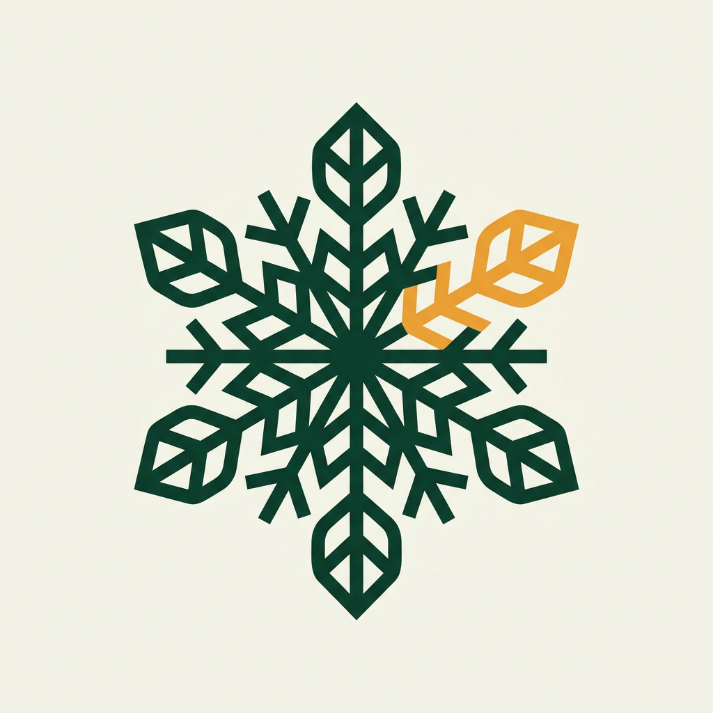
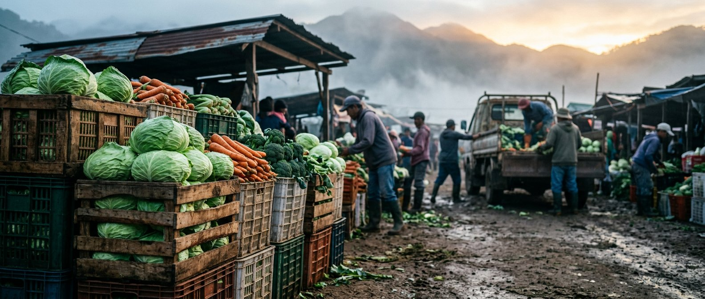

Philippine Startup Challenge XI · Concept Note

FRESKO
Farm-side cooling, shared.
Solar cold rooms + freshness AI for highland vegetable farmers — turning a 35% post-harvest loss into income.
Team: [TEAM NAME]
[Member 1] · [Member 2] · [Member 3]
Mentor: [MENTOR NAME]

Beachhead: Benguet → Metro Manila highland-vegetable corridor
Asking ₱2,400,000 seed · 3 hubs · 120 partner farmers in 12 months
Asking ₱2,400,000 seed · 3 hubs · 120 partner farmers in 12 months